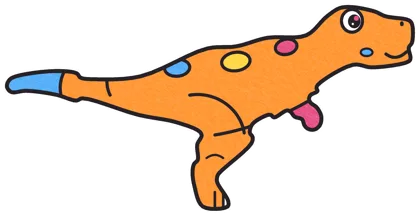
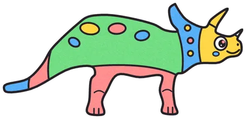
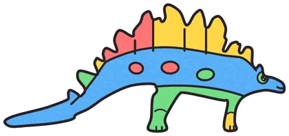
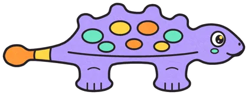

Раскрась любого — он оживёт!
Раскрасьте динозавра на бумаге — он побежит по экрану.




Как играть
- 🖨️Распечатайте раскраскуОбычный лист А4 подойдёт
- 🖍️РаскрасьтеФломастеры, карандаши, мелки — как хочет ребёнок
- 📷Сфотографируйте телефономПрямо на странице игры
- 🦖Динозавр оживёт на экранеС теми же цветами, что на рисунке
📺 Хотите на телевизоре? Откройте игру на большом экране и введите код с телефона.
Вопросы и ответы
Это бесплатно?
Да. Раскраски скачиваются бесплатно, играть тоже можно бесплатно.
Что нужно для игры?
Принтер, чтобы распечатать раскраску, и телефон, чтобы сфотографировать рисунок.
На каком экране бегает динозавр?
На экране телефона, компьютера или телевизора. На ТВ лучше всего: ребёнок видит своего динозавра большим.
Безопасно ли фотографировать?
Да. Вы снимаете только рисунок на бумаге, не ребёнка и не комнату.